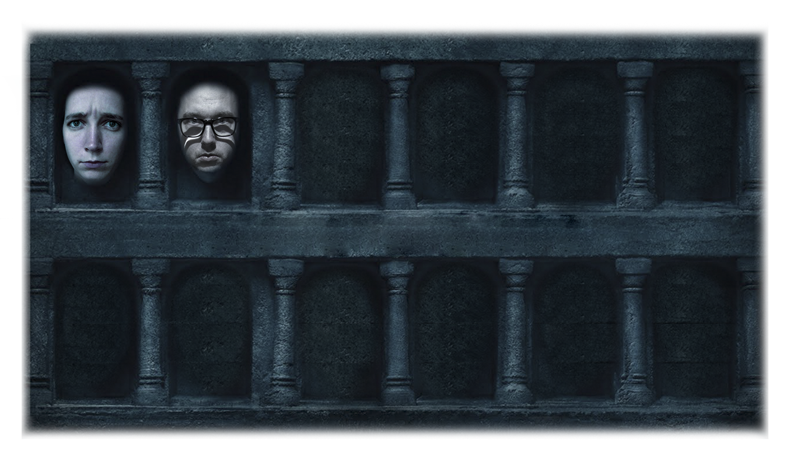

Wat is dit?
Heb je het al gehoord... Winter is coming!
Is het geen tijd voor lente hoor ik je al denken. Maar FUCK dat…. het slotseizoen Game of Thrones start 15 april. Zombie Dragon heeft net een grote muur gesloopt, John Snow heeft net vieze seks gehad met zijn tante en Little Finger zien we dit seizoen gelukkig niet meer terug.
Om het laatste seizoen extra spannend te maken, organiseren wij (Roos & Silke) een Game of Thrones League. 6 spannende avonden in een privé bioscoop waarbij jij punten kan verdienen door de juiste weddenschappen te winnen. Wie zit er uiteindelijk op de troon of krijgen we nog een incest kindje te zien? Speel mee en win leuke prijzen!
Hoe ziet een avond eruit?
18:00
Eten. Iedereen is welkom!
19:30
Laatste vragen opstellen.
20:00
Starten met de aflevering.
22:00
Lekker naar huis toe.
Kalender
15 april 2019
Episode #8.1 @Villa Flikkerlicht
22 april 2019
Episode #8.2 @Villa Flikkerlicht
29 april 2019
Episode #8.3 @Villa Flikkerlicht
6 mei 2019
Episode #8.4 @Villa Flikkerlicht
13 mei 2019
Episode #8.5 @Villa Flikkerlicht
20 mei 2019
Episode #8.6 @Villa Flikkerlicht
De deelnemers
Hoe werkt de league?
Om er een spannende league van te maken hebben we een aantal spelregels opgesteld. Dit zijn de spelregels:
- Elke avond stellen we vragen op die we van te voren beantwoorden. Aan de hand van de antwoorden kan je punten verdienen.
- De inleg om mee te doen is €5. Hiermee kopen we een leuk kado voor de winnaar van de league. Betaal dit via de iDeallink.
- Zorg ervoor dat je minstens 5x aanwezig bent, zodat we het spel goed kunnen spelen.
- Er is 1 joker die je in kan zetten als je bijvoorbeeld een avond niet kan of een avond niet goed gespeeld hebt.
- Alle punten worden na de avond online gegooid op deze website. Hierdoor kan je altijd zien op welke plek je staat en wie je dronken moet voeren om te winnen.
Wil je ook mee doen? Vul dan deze vragenlijst in.